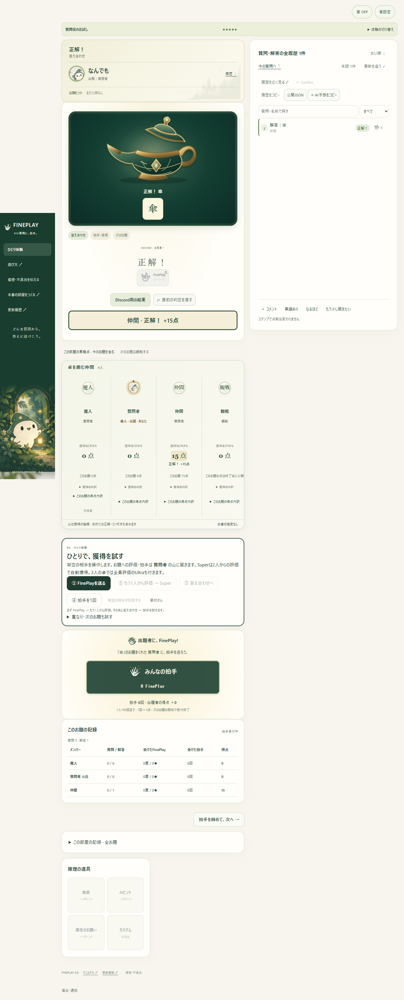
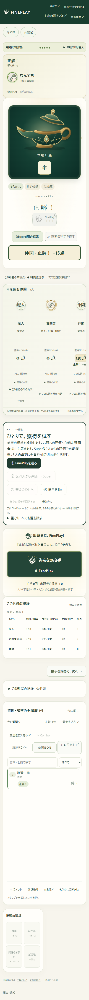
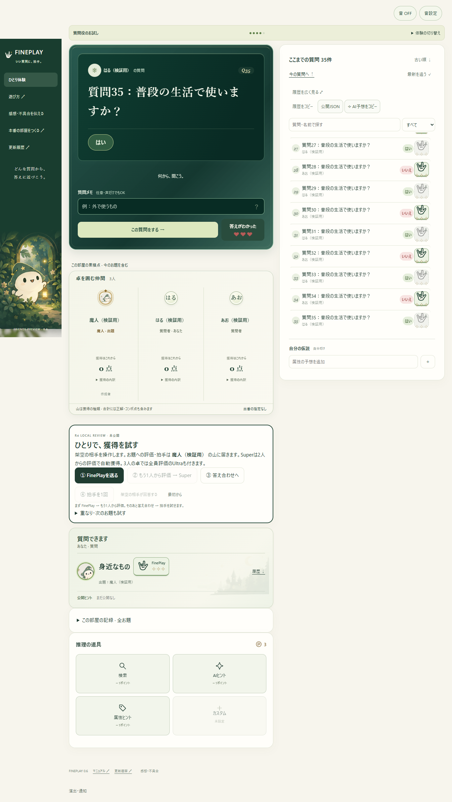
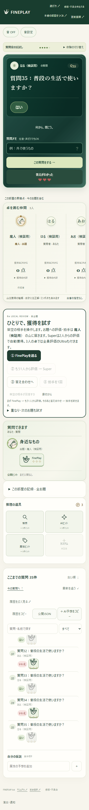
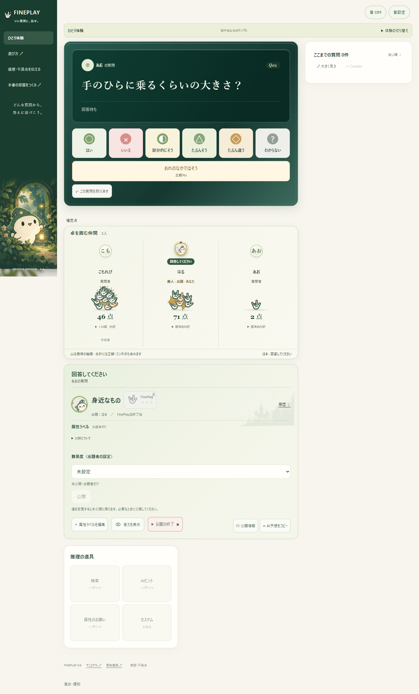
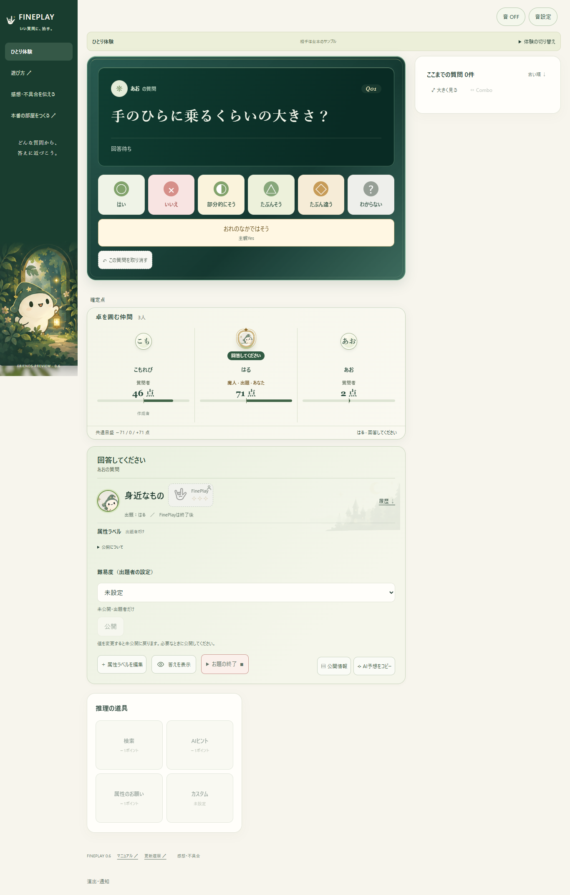

RELEASE ARCHIVE
詳しい更新記録
公開済みの更新と、当時の検証候補を区別して残しています。
R5・R4・R3ほかの画面と当時の状態
以下は以前の記録です。「候補」「未決」はその時点の状態を示します。この修復記録当時の公開版はR5です。比較候補の名称は記録として残し、現在のゲームを旧候補として開くリンクは外しています。
バージョン別の画面と状態
画像は匿名の架空メンバーによる実ブラウザ画面です。実プレイヤーの部屋には接続していません。
公開版 · 2026年10月10日r5-20261010 · 広く使える推理の卓
得点表をメイン・履歴の上に横長で配置。左にプレイヤーと詳細、右に獲得アイコンと総合点をまとめ、縦の長さを圧縮しました。通常の獲得は点数分の手、評価は☆1〜3、Ultraの星と拍手を継続。
履歴の検索・絞込・順序・コピーなどを「表示・操作」にまとめました。PCでは左上の「左リストをたたむ」で画面を広げ、☰で再表示できます。道具は小型のメイン内タイル。質問者のお題評価と「質問できます」などの状態もメインにまとまります。
ランプは森のアートに合わせた水彩イラストへ。煙が膨らみ、答えがランプから上に浮き出ます。Super・Ultraの自動判定、現在の採点、正解の発表・スキップ・音設定を保持しています。
拍手1/10は検証候補のまま。正式な拍手得点、アカウント通算、全セッション表彰、2人卓のUltra条件は今回変更していません。
架空の35問、同じ採点エンジンでの実ブラウザ検証画面。390px幅の実画面
R5をひとりで体験する（当時の比較名）
未公開 · ローカル検証候補R5候補 · 2026年10月10日・見た目再調整
通常FinePlayは☆1〜3で評価し、獲得した点数分の手を積みます。履歴右ボタンは「Fineplay」を内側に収め、カードの右枠へ重ねました。Ultraの星と拍手を継続。
道具は小型のメイン内タイルを採用。メインと得点表の縦を圧縮し、上部横長の得点案も比較できます。左メニューの開閉を追加しました。
ランプを画面に合う水彩イラストへ描き直し、三層の煙と、ランプから上に浮き出る答えを実装。正誤の公開時刻・スキップ・動きを減らす設定を保ちます。
当時の未決：得点表の最終位置、拍手1/10の解釈・正式採用・端数、ランプの見た目の最終確認。他の参加者もFineplayしたらSuper、全員でUltraの自動判定を継続。採点は公開R4を保持しています。当時の公開版はR4です。
縦を縮める得点表（当時の比較名） ／ 上部横長の得点表（当時の比較名） ／ 拍手1/10比較（当時の比較名）
公開済み · 2026年10月9日r4-20261009 · 獲得が見える卓
プレイヤーごとの累積点と、本当に獲得したFinePlay・Super・Ultra・拍手を重なる山で表示。お題を進めても累積点を引き継ぎます。
得点は「誰が・なぜ・何点」を表示。正解の点数は実際のルールに従い、ランプが開いてから合計と一緒に現れます。拍手はひとつのお知らせにまとめます。
お題の範囲に9つの候補を追加。自由入力もそのまま使えます。質問直下に推理の道具を配置し、広い履歴・コピー・100回の拍手操作を保ちました。

匿名の検証用メンバー、実際のエンジン判定後。正解点は設定に応じて変わります。390px幅の得点表示

未実装：新しい完成版ランプイラスト、アカウント通算、部屋の終了条件と全セッション表彰。過去版の保存記録は以下に残しています。
未公開 · レビュー候補R4 修復候補 · r4-repair-local-20261009
部屋の累積点と獲得の山を引継ぎ、Ultra実績を表示。履歴を広げて圧縮し、最新追従・コピー・お助けを整理。拍手の形を安定させ、ランプの発表待ちを同期。
ソース：既存R4ローカルソース＋FP-UPDATE-REPAIR-20261009-01。公開コミットなし。Human Taste未承認。

修復候補のChrome実画面、1366×900・架空の35問。右の履歴は350→約500px、一覧内の完全表示は3→9問。390px幅の実画面

未完：アカウント通算、部屋終了・セッション表彰の定義、承認済みの新ランプ画。クラウド修正との照合は別途。
未公開 · 保存候補R4 · score-pile / solo
横並びのプレイヤーの下に、実際の獲得種類を重ねる山。正確な合計と内訳。簡潔な拍手アイコン、ローカルの獲得体験。
ソース：同じTask #381の修復前R4。公開コミットなし。

先行R4で保存したChrome実画面。エンジンを使った架空の検証データ。既知の旧問題：累積点の表示範囲、Ultra表示抜け、ランプ中の先行表示。
以前の公開版 · 保存済みR3 · r3-20261007
紙色・深緑・森と魔人、横並びプレイヤー、ランプの答え合わせ。この保存版にはR4の獲得の山はありません。
保存された公開基準：76710d26d1f87920ec0ec19da4cff5b43b3de2c7

保存済みR3ソースをローカルで動かしたChrome実画面。公開中の実プレイヤーを撮影したものではありません。
受入済みの過去版R2
FinePlayの自動認定、部屋の累積点、実績・一巡の表彰、紙と森の主要画面。
参照：e0351368a8f328ee6759a6c2e0f98159ee17b74e。この作業範囲には一致するR2ソース・画面がなく、画像は未収録です。公開日時はここでは再確認していません。
過去の公開版0.6
星・拍手100回、推理の道具、コピー、広い履歴、一巡の表彰。下の当時の更新記録を保持しています。
0.6系のGit原本を安全に隔離した保存版で実際に遊び、PC・スマホ幅の実画面を撮影しました。上の0.6系カードで閲覧できます。実プレイヤーの部屋は撮影していません。
元に戻す準備
修復前と修復候補の全ソース・画像をZIPとSHA-256一覧で保存し、作業用コピーだけで復元を試します。旧公開版の全ファイルを保存し、隔離コピーで復元を確認済みです。部屋の得点データやリポジトリ全体を巻き戻す機能ではありません。
公開画面に管理用の復元ボタンはありません。
0.6以前のパッチごとの更新記録
過去の公開版
0.6
星と拍手で盛り上がり、一巡の結果を振り返る。
FinePlayの星、推理の道具、読みやすい履歴と一巡の表彰が加わりました。
- FinePlayは1〜3点、Super・Ultraは自動で加点。拍手は1回1点、1人100回まで。得点と使えるポイントを分けて表示します。
- 全員一巡で、総合結果と部門賞。FinePlayの票数・星数、拍手回数、同順位と実績をふりかえれます。
- 自分の仮説と、お助け。選んだ仮説だけ出題者へ送り、公開情報をAIへ相談するためのコピーも使えます。
ほかの追加・改善を見る
- 改善質問とコメントをひとつの広い履歴に。拡大表示、文字サイズ、検索、Comboと訂正を使いやすくします。
- 追加「おれのなかではそう」と、変更できる回答名。過去の回答は、そのときの表記を保ちます。
- 追加検索・AIヒント・属性ヒントと、任意のお助け枠。追加の無料解答は申請して承認を受けられます。
- 改善お題の後も感想を話せるコメントとスタンプ。最後のお題は結果を確定して一巡の表彰へ進みます。
- 追加5種類の通知音と、FinePlay・熱盛・珍プレーの見た目。音は最初はOFFで、演出は控えめにしたりスキップできます。
- 改善公開した属性のNEW表示と既読、途中参加の次のお題への予約。入力や読んでいる位置を保ちます。
- 修正拍手の受付、回答の訂正、過去の回答名、結果コピーを見直し、取り消した答えがコピーに残ることを防ぎます。
0.5.2
答えやすく、設定はすっきり。
回答のアイコンと余白を整え、まず遊び始めるための設定を見やすくしました。
- 改善出題する人とお題の範囲を先に、ルール調整を後に。協力・対戦はわかりやすい二択にしました。
- 改善属性ラベルはバッジの追加・削除で操作。常時表示の説明や、コメント周りの重複を減らしました。
- 修正回答アイコンが縦につぶれる表示を直し、回答ボタンの余白を戻しました。
0.5.2
選んだルールに、必要な設定を。
ルールの違いと、解答にかかる点数を開始前に確認しやすくしました。
- 改善ルールの選択に合わせ、関係する回数・点数の設定を表示します。
- 改善入力した値に応じて、解答回数や得点の例を確認できます。
0.5.1
まず3回、気軽に解答。
デットルールに、最初の3回を無料にする段階式の解答コストが加わりました。
- 追加4〜6回目は各1点、7回目以降は各2点を初期設定とする段階式と、定額式を選べます。
- 改善次の解答コストと残り無料回数を表示。設定値は画面更新時も保ちます。
0.5
協力も、対戦も。もっと推理、もっと拍手。
遊び方と採点を選び、答え合わせの後まで楽しめるようになりました。
- 追加協力・対戦と、カジュアル・デットのルール。対戦中は自分の質問と回答を見る方式に対応しました。
- 追加「部分的にそう」の回答、Super・Combo、出題者への100回までの拍手。
- 追加答えと属性の事前メモ、選んだ属性ヒントの公開、質問に付けるコメント、途中参加の観戦と全履歴の結果表示。
0.4.1の改善
ひとりでも、答え合わせまで。
質問する側・答える側の体験に、台本の相手が加わりました。
- 改善役ごとのチュートリアルを最後まで進め、結果から実際のゲームへ移れます。
- 修正参加リンクのコピーを見直し、紹介ページと遊び方の案内を実際の画面に合わせました。
0.4.1
読む量を減らして、遊びを前へ。
必要な情報を保ちながら、ゲーム中の説明を整理しました。
- 改善質問・回答・FinePlayなど、その場で使う操作を見つけやすくしました。
0.4
森のまじんと、わかりやすい手番。
まじんと森の画面を整え、役ごとに遊び方を試せるようになりました。
- 改善質問・回答の番と、そこで押す操作を中心にした画面へ。
- 追加役ごとの体験と、必要なときに開く説明を加えました。
0.3
いい質問に、拍手。
ひとり体験と、質問から結果まで使える画面が加わりました。
- 追加まじんと森の見た目、FinePlayの手のマーク、紹介ページから試せる体験。
- 追加質問履歴の検索・絞り込み・表示順、感想メモと結果コピー。